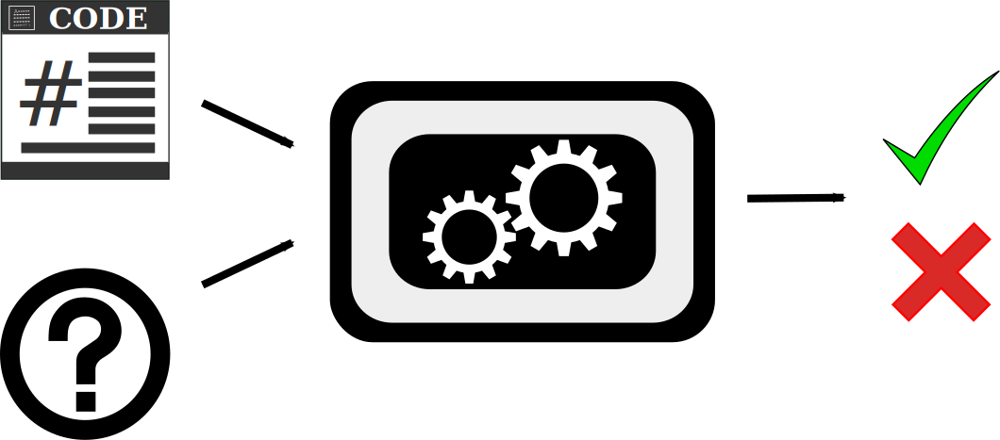
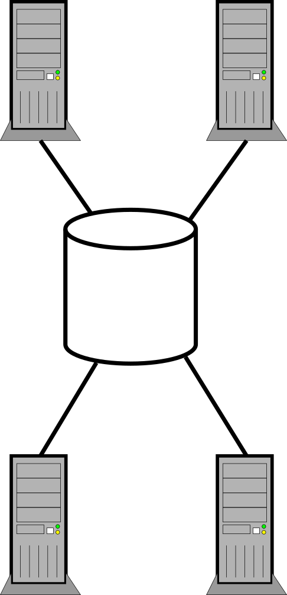
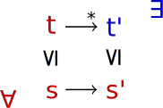
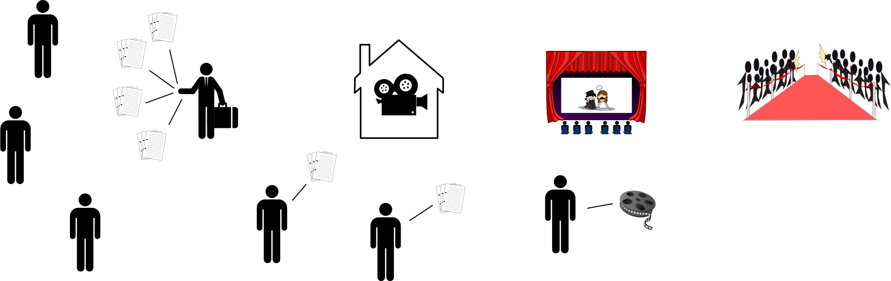
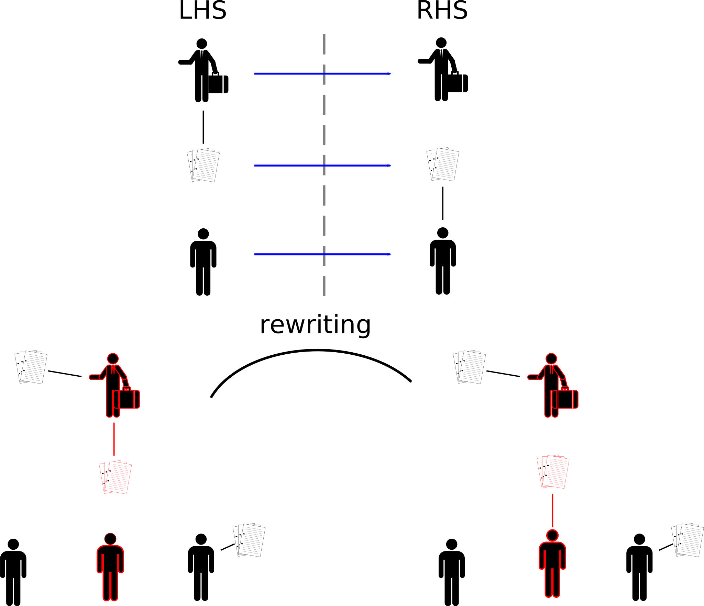
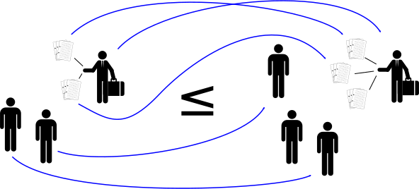
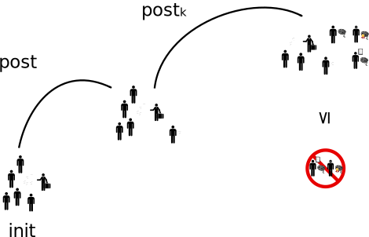
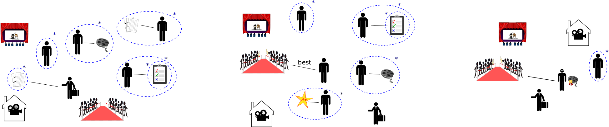
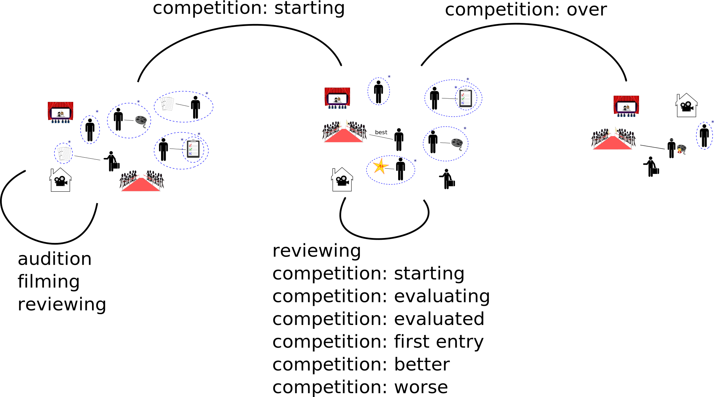
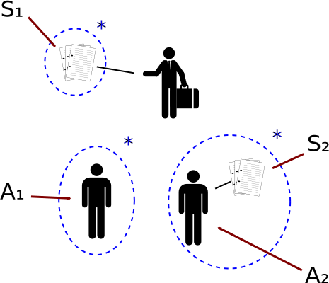

Analysis of Dynamic Message Passing Programs
PhD Defense
Damien Zufferey
IST Austria
2013.08.19
Outline
- motivation + running example
- preliminaries
- part 1: domains of limits
- part 2: ideal abstraction
- part 3: analysis on top of the covering set
- part 4: implementation and experiments
- conclusion
Introduction
Bird's eye view of verification
Concurrency is unavoidable
|
Scaling up Many-core CPU from Intel |
Scaling out 
Data center from Google |
Programming abstractions for concurrent programs
|
Shared memory 
|
Message passing 
|
The actor model [Hewitt et al. 73]
Used as an abstraction to scale up and out.
Actors react to events (messages) by:
- performing internal computation
- sending messages (unbounded mailboxes)
- creating new actors (unbounded number of actors)
Gaining traction in the PL community and in industry: Erlang, Scala + Akka
Snippet from Akka.io, retrieved on 2013.08.10
Example: Hollywood Map-Reduce
Simple flow
What about concurrency ?
(Hint: there is a reason it is called the movie industry.)
To do verification we need a property to check, e.g.,
there should not be a winner if there are still people entering the competition.
- motivation + running example
- preliminaries
- part 1: domains of limits
- part 2: ideal abstraction
- part 3: analysis on top of the covering set
- part 4: implementation and experiments
- conclusion
Foundation of this work
State-space exploration 101
Well-structured transition systems (WSTS)
A well-structured transition system is a transition system 〈S, →, ≤〉 where
- ≤ is a well-quasi-ordering (wqo), i.e. well-founded + no infinite antichain
- compatibility of ≤ w.r.t. → (also called monotonicity)
|
Compatibility in general |
Compatibility in our example |
|  |
The property we check also needs to respect the ordering (upward-closed).
Some references: [Abdulla et al. 96, Finkel and Schnoebelen 01]
Depth-bounded systems (DBS)
Depth-bounded systems are a fragment of the π-calculus identified by [Meyer 08] as an instance of WSTS. In [Bansal, Koskinen, Wies, and Zufferey 13.] we give an alternative formalization as graph rewriting system.
The states are labelled directed graphs (in families) of bounded tree-depth. (the direction of the edges is irrelevant for the depth.) More concretely, this corresponds to the family of graph where the longest acyclic path is bounded. Here is an example state for our running example:
The transitions are graph rewriting rules:
The ordering is subgraph isomorphism. This is a wqo only on families of graphs where the tree-depth is bounded. Also we assume that there is a finite number of labels.
The covering problem: can the system reach a configuration which is greater (or equal) to the target.
- motivation + running example
- preliminaries
- part 1: domains of limits
- part 2: ideal abstraction
- part 3: analysis on top of the covering set
- part 4: implementation and experiments
- conclusion
Toward a forward analysis of DBS:
domain of limits
Approach to the covering problem: saturation-based forward exploration
The goal is to compute the covering set , i.e. the downward-closure of the reachable states. is an inductive invariant ( and ).
Problem: how do we represent ? (it can be infinite)
Representing the covering set
An ideal
The covering set has special properties: wqo space, downward-closed. It can be represented by a finite union of ideal.
Since [Karp and Miller 69] these kind of sets have been represented using some notion of limits. However, general formalizations of the concept came much later:
- adequate domain of limits (axiomatisation) [Geeraerts et al. 06]
- noetherian/sober space (topology) [Goubault-Larrecq 07]
- ideal completion (order theory) [Finkel and Goubault-Larrecq 09]
Limit configurations
We represent limits by nested graphs.
The subgraphs marked by dashed-blue boxes represent an unbounded number of copies of that subgraph.
We can obtain normal graphs from nested graphs by unfolding.
Transition applied to limit configuration
Results [Wies, Zufferey, and Henzinger 10]
Theorem: Limit configurations are the denotation of the ideals of depth-bounded systems.
ingredient of the proof:
- '!' in π-calculus,
- tree closure of graph,
- theorems about tree embeddings,
- hedge automaton for unranked trees,
- etc.
- motivation + running example
- preliminaries
- part 1: domains of limits
- part 2: ideal abstraction
- part 3: analysis on top of the covering set
- part 4: implementation and experiments
- conclusion
Bridging the gap between theory and practice:
ideal abstraction
In [Zufferey, Wies, and Henzinger 12], we define an abstract interpretation framework [Cousot and Cousot 77] for the analysis of WSTS.
Try to capture the essence of acceleration with a set-widening operator.
Instantiate the framework for:
- Petri nets + monotonic extensions
- Lossy channel systems
- Depth-bounded systems
Acceleration does not terminates.
Covering set for our running example
- motivation + running example
- preliminaries
- part 1: domains of limits
- part 2: ideal abstraction
- part 3: analysis on top of the covering set
- part 4: implementation and experiments
- conclusion
Further analysis on top of the covering set
Basic idea: cover + one step
Structural counter abstraction
The automaton above is a very coarse overapproximation of the original system. To recover some precision we add counters that keep track of how many copies of a nested node there are.
Extracting constraints from a transition
Results: In [Bansal, Koskinen, Wies, and Zufferey 13] we apply the structural counters abstraction to prove termination of DBS.
Using the same idea we are working on DPI.
- motivation + running example
- preliminaries
- part 1: domains of limits
- part 2: ideal abstraction
- part 3: analysis on top of the covering set
- part 4: implementation and experiments
- conclusion
Implementation: Picasso
http://pub.ist.ac.at/~zufferey/picasso/input: a DBS either as a graph rewriting system or written in a simple actor language.
output: the covering set, optionally a counter abstraction and proof of termination.
evaluation: examples coming from distributed systems and later shared memory.
- Actors: map-reduce (Actors in Scala), chatroom (Liftweb framework), round-robin load-balancer (Akka), etc.
- Shared memory: Treiber's stack [Treiber 86], Herlihy/Wing queue [Herlihy and Wing 90], Michael/Scott queue [Michael and Scott 96], etc.
Detailed results in the thesis and on the tool's web page.
Picasso's output on our running example.
Related Work
- π-calculus [Milner et al 92]
- WSTS/Petri nets to analyse concurrent program (counter abstraction): too many to cite ...
- Abstract interpretation for WSTS [Ganty et al 06]
- Termination of lock-free algorithms [Gotsman et al 09]
- Other group working on DBS: analysis or Erlang program [D'Osualdo et al 12]
- etc.
Conclusion
- Developed a framework for the analysis of DBS:
- Limits for DBS
- Sound and terminating analysis
- Structural counter abstraction
- Applicable to:
- distributed systems (client-server)
- shared memory (flat collection)
- Safety (covering) and liveness (termination)
- Implementation in Picasso
Bibliography
- Carl Hewitt, Peter Bishop, and Richard Steiger. A Universal Modular ACTOR Formalism for Artificial Intelligence. In IJCAI, pages 235–245, 1973.
- William Clinger. Foundations of Actor Semantics. PhD thesis, MIT CSAIL, 1981.
- Gul Agha. ACTORS: A Model of Concurrent Computation in Distributed Systems. PhD thesis, MIT CSAIL, 1986.
- Parosh Aziz Abdulla, Karlis Cerans, Bengt Jonsson, and Yih-Kuen Tsay. General Decidability Theorems for Infinite-State Systems. In LICS, pages 313–321. IEEE, 1996.
- Alain Finkel and Ph. Schnoebelen. Well-structured transition systems everywhere! Theor. Comput. Sci., 256(1-2):63–92, 2001.
- Roland Meyer. On Boundedness in Depth in the pi-Calculus. In TCS, volume 273 of IFIP 273, pages 477–489. Springer, 2008.
- Roland Meyer. A theory of structural stationarity in the pi -calculus. Acta Inf., 46(2):87–137, 2009.
- Thomas Wies, Damien Zufferey, and Thomas A. Henzinger. Forward Analysis of Depth-Bounded Processes. In FoSSaCS 2010, volume 4349 of LNCS, pages 94–108. Springer, 2010.
- Damien Zufferey, Thomas Wies, and Thomas A. Henzinger. Ideal Abstractions for Well-Structured Transition Systems. In VMCAI, pages 445–460, 2012.
- Kshitij Bansal, Eric Koskinen, Thomas Wies, and Damien Zufferey. Structural counter abstraction. In Nir Piterman and Scott A. Smolka, editors, TACAS, volume 7795 of Lecture Notes in Computer Science, pages 62–77. Springer, 2013.
- Richard M. Karp and Raymond E. Miller. Parallel Program Schemata. J. Comput. Syst. Sci., 3(2):147–195, 1969.
- Gilles Geeraerts, Jean-Francois Raskin, and Laurent Van Begin. Expand, Enlarge and Check: New algorithms for the coverability problem of WSTS. J. Comput. Syst. Sci., 72(1):180–203, 2006.
- Jean Goubault-Larrecq. On Noetherian Spaces. In LICS, pages 453–462. IEEE Computer Society, 2007.
- Alain Finkel and Jean Goubault-Larrecq. Forward Analysis for WSTS, Part I: Completions. In STACS, volume 09001 of Dagstuhl Sem. Proc., pages 433–444, 2009.
- Alain Finkel and Jean Goubault-Larrecq. Forward Analysis for WSTS, Part II: Complete WSTS. In ICALP (2), pages 188–199, 2009.
- R.K. Treiber. Systems programming: Coping with parallelism. IBM Incorporated, Thomas J. Watson Research Center, 1986.
- Maurice Herlihy and Jeannette M. Wing. Linearizability: A Correctness Condition for Concurrent Objects. ACM Trans. Program. Lang. Syst., 12(3):463–492, 1990.
- Maged M. Michael and Michael L. Scott. Simple, Fast, and Practical Non-Blocking and Blocking Concurrent Queue Algorithms. In PODC, 1996.
- Robin Milner, Joachim Parrow, and David Walker. A Calculus of Mobile Processes, I. Inf. Comput., 100(1):1–40, 1992.
- Robin Milner, Joachim Parrow, and David Walker. A Calculus of Mobile Processes, II. Inf. Comput., 100(1):41–77, 1992.
- Alexey Gotsman, Byron Cook, Matthew J. Parkinson, and Viktor Vafeiadis. Proving that non-blocking algorithms don’t block. In POPL. ACM, 2009.
- Pierre Ganty, Jean-Francois Raskin, and Laurent Van Begin. A Complete Abstract Interpretation Framework for Coverability Properties of WSTS. In VMCAI, pages 49–64, 2006.
- Emanuele D’Osualdo, Jonathan Kochems, and Luke Ong. Soter: an automatic safety verifier for Erlang. In Proceedings of the 2nd edition on Programming systems, languages and applications based on actors, agents, and decentralized control abstractions, AGERE! ’12, pages 137–140. ACM, 2012.
- Patrick Cousot and Radhia Cousot. Abstract interpretation: a unified lattice model for static analysis of programs by construction or approximation of fixpoints. In POPL, pages 238–252, 1977.